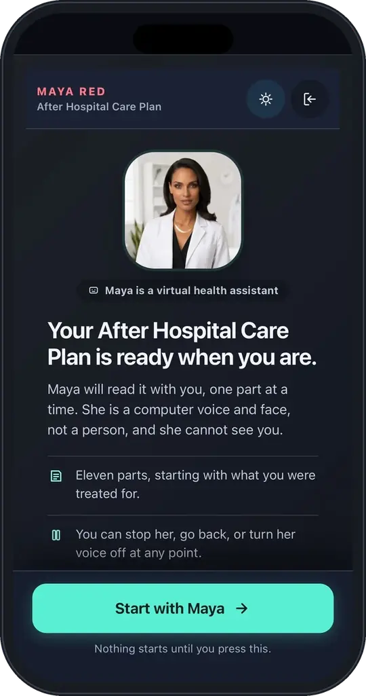
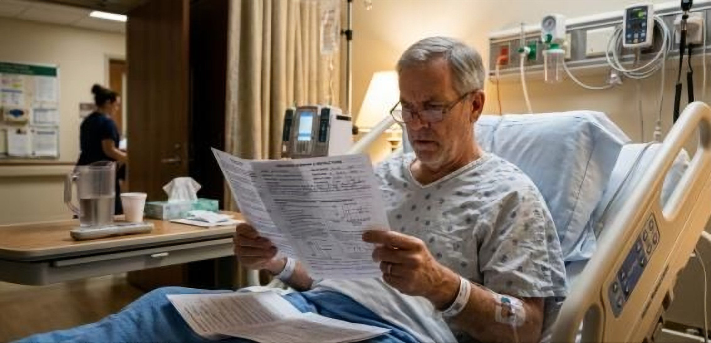

Turn clinical instructions into conversations patients understand.
Maya turns each patient's own discharge summary or procedure instructions into an interactive, multilingual care conversation within minutes. Send it by secure email. Patients open it from a secure web link, with no app to download.

Send. Generate. Engage.
It starts with a document your team already writes: the discharge summary, the after-visit summary or the procedure instructions.
- 01 · Send
Secure email
Your team sends the patient's discharge summary or instructions to Maya by secure email. Nothing new for nurses to install or learn.
- 02 · Generate
A personal care conversation
Within minutes, Maya turns that document into a conversation about this patient's diagnoses, medicines, follow-ups and warning signs, in plain language and in their language.
- 03 · Engage
A secure web link
The patient opens a secure link on a phone or computer. Maya talks it through, answers questions and confirms understanding with teach-back.
Ready in minutes, built from your own documents, with no EHR integration needed to start.
See Maya explain a discharge.
A narrated walkthrough of a real After Hospital Care Plan: the care plan, the diagnosis, every medicine and the warning signs, in plain language. Demo with a fictional patient.
Adds to your discharge process. Replaces nothing.
Maya can start by complementing your existing nursing, discharge and RPM workflows. Your nurses still discharge, your case managers still coordinate and your RPM program keeps running. Maya makes sure each patient understood, and shows your team who didn't.
Secure-email workflow
- Discharge summaries or instructions sent by secure email
- No EHR integration or ADT feed required
- Runs alongside your current discharge, call-back and RPM programs
- Business associate agreement signed before any patient data is shared
Enterprise integrations
- Automated delivery of discharge documents and notifications
- Comprehension and outcome reporting for your quality team
- 30-day follow-up, with our staff supporting your clinicians
- Scoped with your IT and security teams; full programs typically go live in 4–6 weeks
Wherever patients leave with instructions.
MayaRED discharge
All 13 steps of Project RED with teach-back, then 30 days of follow-up after discharge.
Transitions of care →Ambulatory surgery centersBefore and after the procedure
Prep, day-of instructions and recovery at home, including colonoscopy and endoscopy, built from your center's own instructions.
ASC & outpatient →Physician practicesNew diagnoses and medicines
What a new diagnosis means, how to start a new medicine, and what to do when questions come up.
ASC & outpatient →Care breaks down at discharge.
Patients leave with 30 pages of paperwork and a phone number. Nurses don't have time to confirm they understood. One in five Medicare patients is back within 30 days, and hospitals now carry the financial risk for that month.
One patient. One team. From the hospital to home.
Hospitals can start with the discharge conversation alone, or add follow-up and ongoing care with the same protocol-driven AI and the same staff supporting your clinicians.

Leaving the hospital
Maya walks every patient through all 13 steps of Project RED in plain language and confirms understanding with teach-back, at the bedside or once they're home.
Transitions of care →02 · DAYS 1–30The first 30 days
Our staff calls within two business days on behalf of your clinicians, the patient sees your clinician by day 7, and daily check-ins catch red flags before they become readmissions.
Transitions of care →03 · MONTH 2 ONWARDLiving at home
Tech-enabled APCM, remote monitoring, principal care and behavioral health integration keep patients stable at home, month after month.
Remote care →The protocol is the map. The AI is just the voice.
LLMs can talk, but they can't be trusted to follow a protocol. Maya keeps the protocol in charge, so every patient gets the same evidence-based care, on every shift, in their own language.
The protocol
A validated pathway such as Project RED or APCM, turned into versioned logic. Every step traces to its source.
Maya decides
The engine picks the next question, the branch and the escalation. Built over 10+ years with 25,000 physician hours.
AI does the talking
Plain-language conversation by text, voice, app or video. Notes contain only what the patient said.
Your clinicians act
Our staff supports your clinicians: following up, bringing red flags to them in real time and documenting in your EHR.
Proven protocol. Proven at the bedside.
RED was developed at Boston University and tested in randomized trials. MayaRED was co-developed with Dr. Brian Jack, who created it, and first deployed at Spring Valley Hospital (UHS), which renewed and expanded the program.
Sources: Spring Valley Hospital heart-failure pilot, AHA Scientific Sessions 2024, Circulation 2024;150(Suppl 1):4142032. RED trial: Jack BW et al., Ann Intern Med 2009;150:178–187. Discharge communication meta-analysis: Becker C et al., JAMA Netw Open 2021;4(8):e2119346.
Trusted by leading physician groups
“…our patients feel more connected to their care teams and better supported in managing chronic conditions between visits.”
 Hailee Long
Hailee LongCEO, Kidney Specialists of Southern Nevada
“What sets MayaMD apart is their clear focus on patient engagement, education, and support.”
 Dr. Manish Tanna
Dr. Manish TannaPresident, NANI
“Their team handled everything from patient enrollment to device provision with precision, efficiency, and professionalism.”
 Dr. Sharmila Parvathaneni
Dr. Sharmila ParvathaneniArizona Kidney Care


Recognized by CB Insights Digital Health 150 · LG NOVA Selected 20 · Renault-Nissan Open Innovation Challenge winner
Let's make every discharge a safe one, and every home a safe place to recover.
Start with one unit and a secure email workflow. Readmission penalties, Medicare's TEAM model and the new APCM codes all reward patients who stay well at home.